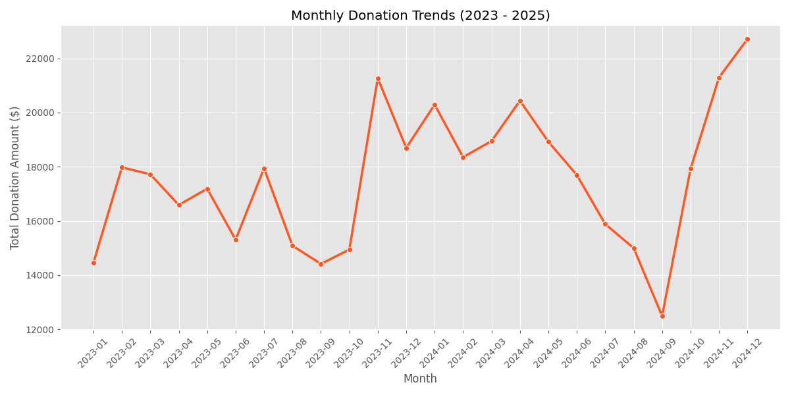
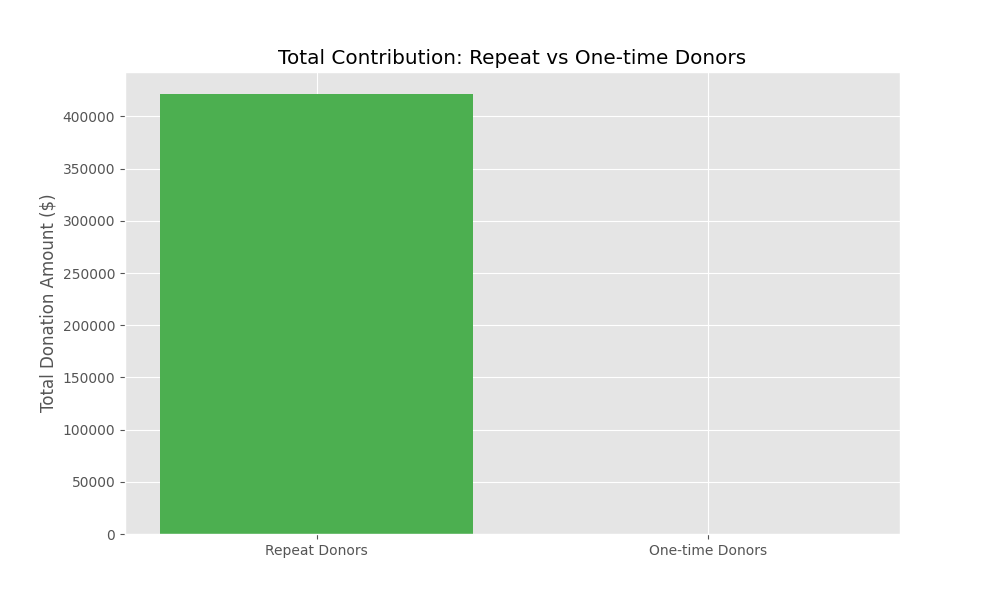

Problem Statement
Non-profits struggle to understand donor behavior. Our goal is to identify donor patterns, high fundraising periods, and effectiveness of different campaigns.
Key Insights
- Repeat donors contribute significantly to total funding.
- Donations show clear cyclical trends with peaks in specific months.
- Small but frequent donations form the foundation of fundraising efforts.
Visualizations
Donation Trends

Donor Contribution
